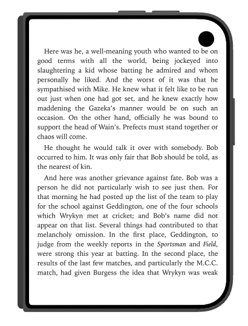

Two pages, one book.
Open a book across the inner display and it becomes a two-page spread, the way a printed book lies open.
- EPUB, PDF and comics all turn as facing pages.
- The page curl follows your finger, and text stays clear of the hinge.
Panel Mode on every screen.
Panel Mode reads comics panel by panel on the outer display, the flat inner display, or the folded Duo, so the same comic works wherever you hold it.
Follows the fold.
The Library grid, reader controls and layout adjust as you flip the Duo to the seated pose, fold it halfway or work in Split View. Fold the Duo to the outer display and you get one clean page.

Same Sutra on iPhone and iPad.
iPhone and iPad look exactly as before. Duo support is part of Sutra 2.5.0 for iOS, so earlier versions don't include it.
Questions about iPhone Duo.
Does Sutra support the iPhone Duo?
Yes. Sutra 2.5.0 for iOS is made for the iPhone Duo. Update Sutra from the App Store to get the Duo features; earlier versions don't include them.
How does two-page reading work on the iPhone Duo?
Open a book across the inner display and Sutra shows it as a real two-page spread. The page curl follows your finger, and text stays clear of the hinge.
Which book formats show two pages on the iPhone Duo?
EPUB, PDF, and comics all turn as facing pages on the inner display. Panel Mode reads comics panel by panel on the outer display, the flat inner display, or the folded Duo.
What happens when I fold or unfold my iPhone Duo while reading?
Sutra adjusts as you change the Duo's posture. Fold it to the outer display and you get one clean page. The Library grid, reader controls, and layout also adjust as you flip the Duo to the seated pose, fold it halfway, or use Split View.
Does Sutra look different on iPhone or iPad?
No. On iPhone and iPad, Sutra looks exactly as it did before version 2.5.0.
Get Sutra for iPhone Duo.
Install or update Sutra from the App Store, then open a book across the inner display.